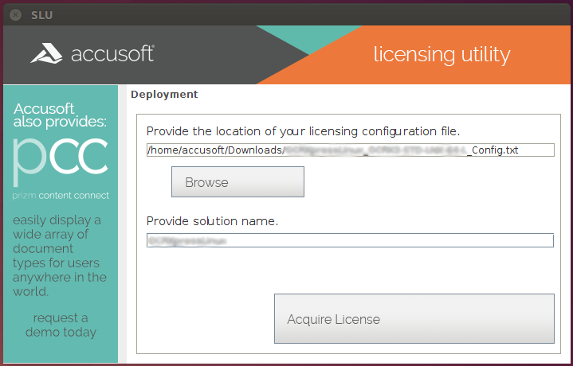

| ImageGear Java PDF > Licensing > Runtime Licensing > Automatically Reported Runtime (Node-Locked) > Server Licensing Utility (SLU) |
The Server Licensing Utility (SLU) uses License Configuration Files to request a license key from the purchased Runtime licenses. The SLU registers that Runtime license on the system where your application will be running. This utility can be used by developers for testing, by your deployment team, or by your end users to register their Runtime license.

Use the following steps to register the license on your system:
Run the SLU using runSlu shell script.
Provide the location of the license configuration file (type in the corresponding text box or use the Browse button) and the solution name.
Click Acquire License.
Automatic Registration (Connected to Internet)
Automatic registration works in much the same way as connected Toolkit registration and requires an Internet connection on the system where your application software will be deployed. The license information along with the system’s hardware information is sent over the Internet to the Accusoft licensing web service. If an unused license is available, a new license key containing information for the system is generated, returned, and is then automatically installed by the Server Licensing Utility.
Manual Registration (Disconnected from Internet)
In the situation where the SLU is not able to contact the Licensing services, a dialog will be displayed stating that the "application could not reach the licensing services". You will have the option to retry the registration or to "License Manually". Select the License Manually option to proceed.
The Manually License dialog will display a text box with your system Hardware Key. This key is used to identify your system during the registration process. This key will need to be supplied to the Accusoft Licensing Center in order to obtain a license to register the system. Using your mouse or keyboard select all of the text within the text box and copy it to the clipboard.
Once back to the SLU running on your system, you can paste the license information into the awaiting text area.
If the SLU was closed after you left it to go to the Accusoft Licensing Center, you can restart the application and perform all the previous steps again to return to this screen in the Server Licensing Utility. You do not need to repeat the steps on the Accusoft Licensing Center web site.
Enter the license information and click Apply License to apply the License on the current machine.